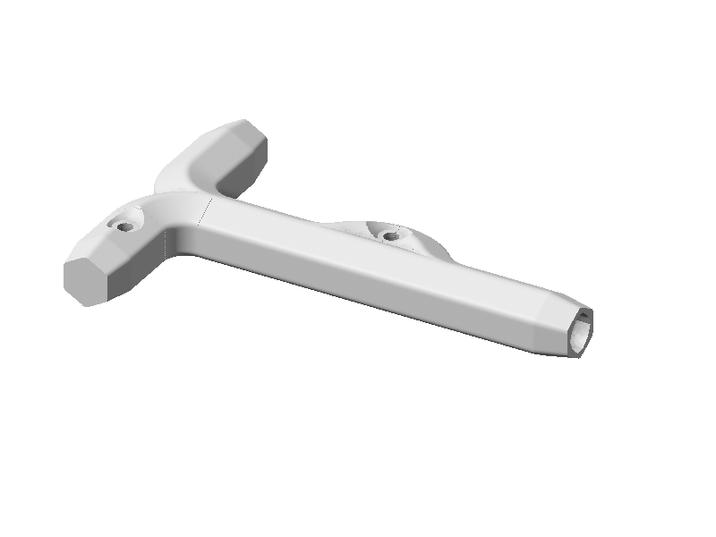
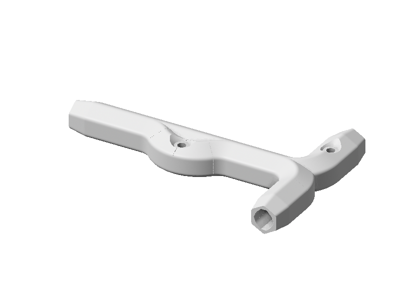

allen-key-handle
Drafted with AI, not yet reviewed
by Reimods/allen_key_handle.scad
T-handle for a bent Allen key: a hexagonal bar whose halves curve into the stem, a screw through the bar and one through a loop in the stem.
Ported from src/mods/allen_key_handle.scad. Differences:
- The bar, its curves into the stem and the stem are one sweep, tapered tips included, mirrored about the stem; the original extrudes and revolves each piece.
- Circles are round: the original’s key and screws are 36-gons, the bends 96-gons and the handle’s rounding 24-gons (under 0.01 mm).
- The key itself, a reference drawing in the original, is not drawn.
Compared with the original: within 0.016 mm.


Files
Source
// SPDX-License-Identifier: 0BSD // // T-handle for a bent Allen key: a hexagonal bar whose halves curve into // the stem, a screw through the bar and one through a loop in the stem. // // Ported from `src/mods/allen_key_handle.scad`. Differences: // - The bar, its curves into the stem and the stem are one sweep, tapered // tips included, mirrored about the stem; the original extrudes and // revolves each piece. // - Circles are round: the original's key and screws are 36-gons, the bends // 96-gons and the handle's rounding 24-gons (under 0.01 mm). // - The key itself, a reference drawing in the original, is not drawn. // // Compared with the original: within 0.016 mm. // --- Parameters --- const KEY_R = 2.25; const KEY_BEND_R = 7.0; const KEY_X = 70.0; const KEY_Y = 20.0; const KEY_GAP = 0.1; const HANDLE_R = 4.5; const HANDLE_ROUNDING = 1.0; const BAR = 40.0; const STEM = 60.0; const TIP_SCALE = 0.8; const SCREW_R = 1.0; const SCREW_LENGTH = 6.0; const SCREW_CAP = 2.0; const SCREW_CAP_R = 1.75; const LOOP_FACTOR = 1.75; const LOOP_AT = 30.0; // --- Profiles --- // The handle's section: a hexagon with a vertex up, rounded. fn handle_profile() { regular_polygon(6, global::HANDLE_R - global::HANDLE_ROUNDING) .rotate_z(30) .offset(global::HANDLE_ROUNDING) } // The key's hole: its round section, widened by a diamond and a flat wedge // that let the printed hole close round the key. fn key_hole_profile() { let r = global::KEY_R + global::KEY_GAP; let f = 1.515; let diamond = rect(r * 2.0) .rotate_z(45) .intersection(rect([r * SQRT_2, r * 2.2])); let a = r * f * FRAC_1_SQRT_2; let b = r * 4.0 * FRAC_1_SQRT_2; let wedge = polygon([[a, 0], [0, b], [-a, 0], [0, -b]]) .intersection(rect([r * 4.0, r * f / 2.0])); union(circle(r), diamond, wedge) } // --- Handle --- // Half the handle, from the +Y bar's tip, down the bar, round the curve and // along the stem to its tip; the tips taper to TIP_SCALE. fn handle_half() { let bend = global::KEY_BEND_R; let path = [#{line: global::BAR / 2.0 - bend}, #{arc: bend, turn: 90}, #{line: global::STEM - bend}]; let tip = global::HANDLE_R / sweep_length(path); let taper = global::TIP_SCALE; handle_profile() .sweep(path, #{scale: [[0, taper], [tip, 1], [1 - tip, 1], [1, taper]]}) .rotate_z(-90) .move([0, global::BAR / 2.0, 0]) } // The screw loop: the stem bulges round the screw in four arcs of 45 // degrees, from the stem and back. fn screw_loop() { let r = global::HANDLE_R * global::LOOP_FACTOR; let x = r * SQRT_2; handle_profile() .sweep([#{arc: r, turn: 45}, #{arc: r, turn: -45}, #{arc: r, turn: -45}, #{arc: r, turn: 45}]) .move([-x, 0, 0]) } // --- Cutters --- // A screw's hole, centred on z = 0: the shank, countersunk at both ends. fn screw_hole() { let half = global::SCREW_LENGTH / 2.0; let cap = cone([global::SCREW_CAP_R, global::SCREW_CAP_R + global::SCREW_CAP], [half, half + global::SCREW_CAP]); union(cylinder(global::SCREW_R, global::SCREW_LENGTH + global::SCREW_CAP), cap.symmetric_z()) } // The key's hole, along the key: down the bar, round its bend, along the // stem. fn key_hole() { key_hole_profile() .sweep([#{line: global::KEY_Y}, #{arc: global::KEY_BEND_R, turn: 90}, #{line: global::KEY_X}]) .rotate_z(-90) .move([0, global::KEY_BEND_R + global::KEY_Y, 0]) } // --- Assembly --- let r = HANDLE_R * LOOP_FACTOR; let loop_y = r * SQRT_2 * tand(22.5); let handle = union(handle_half().symmetric_y(), screw_loop().move([LOOP_AT, 0, 0])); let cutters = union( key_hole(), screw_hole().move([0, -BAR / 4.0, 0]), screw_hole().move([LOOP_AT, loop_y, 0]), ); draw(handle.difference(cutters));